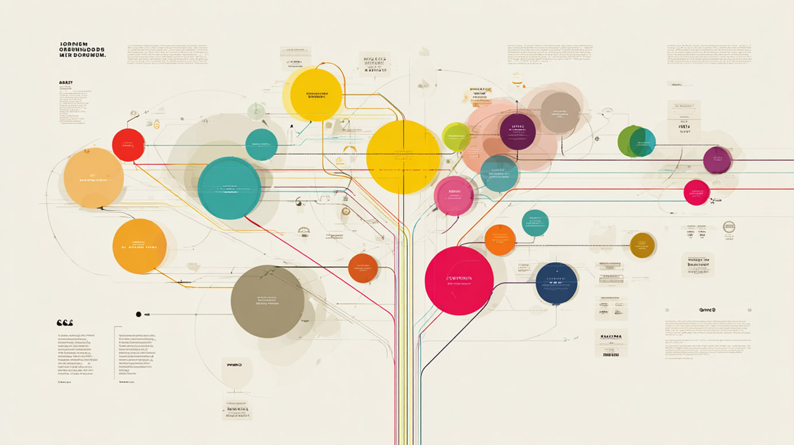

June 7, 2025
7 ChatGPT Prompts Worth More Than a College Degree
In an era where a traditional degree can cost over $100,000 and take years to complete, AI-powered self-education offers a faster, more affordable path. With tailored ChatGPT prompts, you can design your own curriculum, practice deliberately, diagnose gaps, and even test your mastery-without campus fees or commuting. Below are seven meticulously crafted prompts to transform ChatGPT into your personal professor, coach, and examiner. Get ready for deep dives, hands-on projects, and professional-level assessments, all at your fingertips.
1. Expert Teacher
This prompt turns ChatGPT into a seasoned professor, creating a custom curriculum for any topic-from statistics and coding to art history and guitar. You’ll receive a structured syllabus with weekly modules, curated readings, interactive activities, and real-world case studies tailored to your goals and timeline.
Imagine a six-week deep dive into data science that adapts based on your progress, or a three-month art history course focusing on Renaissance techniques you choose. The Expert Teacher prompt ensures every minute spent learning contributes maximally to your competence.
Sample Prompt
Act as a world-class professor teaching me [Subject]. Create a complete curriculum from fundamentals to advanced concepts, focusing on real-world application.
2. Skill Accelerator
Deliberate practice is the gold standard for achieving expertise faster. This prompt asks ChatGPT to design a daily regimen that sequences focused exercises, scaffolds difficulty, and provides reflective prompts. You’ll get a day-by-day plan specifying exactly what to practice, how long to spend, and how to measure progress, condensing years of training into months.
Whether you’re learning a new language or perfecting chess tactics, a Skill Accelerator plan keeps you accountable and maximizes neural growth through optimal challenge and feedback loops.
Sample Prompt
I need to master [specific skill] in the shortest time possible. Create a daily practice system that uses deliberate practice principles to compress years of learning into months.
3. Feynman Technique
Richard Feynman championed the idea that teaching a concept simply proves your understanding. This prompt directs ChatGPT to explain any concept in three phases: first as if to a child, then at a technical novice level, and finally with expert-level depth. By iterating your own explanations back to the model, you uncover misconceptions and deepen comprehension.
This multi-layered approach is especially powerful for topics like quantum physics, complex algorithms, or dense literature-ensuring you truly internalize each idea rather than just memorizing jargon.
Sample Prompt
Explain [complex concept] using the Feynman Technique – first in simple language a 12-year-old would understand, then add layers of sophistication until I grasp the advanced version.
4. Practical Project Creator
Application cements learning. This prompt has ChatGPT craft a hands-on project-complete with objectives, step-by-step instructions, required tools, and evaluation criteria. You’ll build a portfolio-worthy deliverable while reinforcing core concepts in real time.
For example, a web development project could guide you through building a RESTful API with user authentication, error handling, and deployment scripts-perfect for demonstrating professional skills to potential employers.
Sample Prompt
Design a hands-on project that will teach me [skill, subject] through application, including step-by-step instructions, common mistakes to avoid, and how to evaluate my results.
5. Knowledge Gap Finder
Ever feel stuck on specific subtopics? This prompt asks ChatGPT to analyze your current knowledge-based on your notes, attempted exercises, or practice results-and identify the precise gaps. It then generates targeted drills like flashcards, short quizzes, or mini-challenges to plug those holes.
By iterating this process weekly, you ensure no weakness lingers, accelerating mastery and boosting confidence.
Sample Prompt
I’ve been studying [subject] but still struggle with application. Identify the likely gaps in my understanding and create targeted exercises to fill them.
6. Mental Model Builder
Experts rely on mental models-structured ways to view complex domains. This prompt instructs ChatGPT to synthesize your scattered notes into a coherent model: flowcharts, decision trees, or layered diagrams. You see how concepts interrelate, making recall and application fluid under pressure.
Whether tackling business strategy or machine learning pipelines, a clear mental map accelerates problem-solving and innovation.

Sample Prompt
Transform my fragmented knowledge of [topic] into a coherent mental framework with key principles, relationships, and practical decision tools.
7. Mastery Verification
True mastery shows itself under testing conditions. This prompt has ChatGPT generate a professional-grade exam-scenario-based questions, coding challenges, case study analyses-with a clear scoring rubric and detailed feedback for every answer.
Pass this test, and you’ll have tangible proof of expertise equivalent to industry certifications-perfect for resumes and interviews.
Sample Prompt
Create a comprehensive test of my knowledge in [subject, skill] that would prove mastery equivalent to professional standards, with detailed feedback on my answers.
By combining these seven prompts, you effectively build your own AI-powered degree-complete with lectures, practice sessions, projects, gap analysis, mental frameworks, and rigorous exams. Start today, save thousands, and achieve professional-level expertise on your schedule.